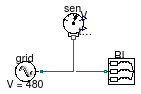
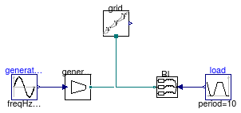
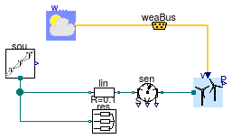

Package with example models
Information
This package contains examples for the use of models that can be found in
Buildings.Electrical.AC.ThreePhasesBalanced.Sources.
Extends from Modelica.Icons.ExamplesPackage (Icon for packages containing runnable examples).
Package Content
| Name |
Description |
 FixedVoltageSource FixedVoltageSource
|
This example illustrates how using a fixed voltage source |
| PVPanels
|
This example illustrates how to use PV panel models |
| VariablePowerSource
|
This example illustrates how using a variable power source |
 WindTurbine WindTurbine
|
Example for the WindTurbine AC model |
This example illustrates how using a fixed voltage source

Information
This example shows how to use a fixed voltage generator model.
Extends from Modelica.Icons.Example (Icon for runnable examples).
Modelica definition
This example illustrates how to use PV panel models

Information
This example shows how to use a simple PV model without orientation
as well as a PV model with orientation. The power produced by the PV is
partially consumed by the load, and the remaining part is fed into
the grid.
Extends from Modelica.Icons.Example (Icon for runnable examples).
Modelica definition
model PVPanels
"This example illustrates how to use PV panel models"
extends Modelica.Icons.Example;
Buildings.Electrical.AC.ThreePhasesBalanced.Loads.Inductive RL(
mode=Types.Load.VariableZ_y_input,
P_nominal=-2000,
V_nominal=480)
"Load taht consumes the power generted by the PVs";
Buildings.Electrical.AC.ThreePhasesBalanced.Sources.Grid grid(f=60, V=480)
"Electrical grid model";
Modelica.Blocks.Sources.Constant load(k=0.5)
"Load consumption";
BoundaryConditions.SolarIrradiation.DiffusePerez HDifTil(
til=0.34906585039887,
lat=0.65798912800186,
azi=-0.78539816339745)
"Diffuse irradiation on tilted surface";
BoundaryConditions.SolarIrradiation.DirectTiltedSurface HDirTil(
til=0.34906585039887,
lat=0.65798912800186,
azi=-0.78539816339745)
"Direct irradiation on tilted surface";
BoundaryConditions.WeatherData.ReaderTMY3 weaDat(
computeWetBulbTemperature=false,
filNam="modelica://Buildings/Resources/weatherdata/USA_CA_San.Francisco.Intl.AP.724940_TMY3.mos");
Modelica.Blocks.Math.Add G
"Total irradiation on tilted surface";
ThreePhasesBalanced.Sources.PVSimple pvSimple(A=10, V_nominal=480)
"PV array simplified";
ThreePhasesBalanced.Sources.PVSimpleOriented pvOriented(
A=10,
V_nominal=480,
til=0.34906585039887,
lat=0.65798912800186,
azi=-0.78539816339745)
"PV array oriented";
equation
connect(grid.terminal, RL.terminal);
connect(load.y, RL.y);
connect(weaDat.weaBus,HDifTil. weaBus);
connect(weaDat.weaBus,HDirTil. weaBus);
connect(HDifTil.H,G. u1);
connect(HDirTil.H,G. u2);
connect(G.y,pvSimple. G);
connect(pvSimple.terminal, RL.terminal);
connect(weaDat.weaBus, pvOriented.weaBus);
connect(pvOriented.terminal, RL.terminal);
end PVPanels;
This example illustrates how using a variable power source

Information
This example shows how to use a variable generator model. The generator model has to be used
together with a voltage source generator, which is in this example the
grid model.
Extends from Modelica.Icons.Example (Icon for runnable examples).
Modelica definition
model VariablePowerSource
"This example illustrates how using a variable power source"
extends Modelica.Icons.Example;
Buildings.Electrical.AC.ThreePhasesBalanced.Sources.Generator generator(f=60,
phiGen=0.26179938779915)
"AC generator model";
Modelica.Blocks.Sources.Sine generation(
offset=200,
startTime=1,
amplitude=100,
freqHz=0.05)
"Generated power";
Buildings.Electrical.AC.ThreePhasesBalanced.Loads.Inductive RL(mode=Types.Load.VariableZ_y_input,
P_nominal=-300,
V_nominal=480)
"Load model";
Buildings.Electrical.AC.ThreePhasesBalanced.Sources.Grid grid(f=60, V=480)
"AC one phase electrical grid";
Modelica.Blocks.Sources.Trapezoid load(
rising=2,
width=3,
falling=3,
period=10,
startTime=1,
amplitude=0.8,
offset=0.2)
"Power consumption profile";
equation
connect(generation.y, generator.P);
connect(generator.terminal, RL.terminal);
connect(grid.terminal, RL.terminal);
connect(load.y, RL.y);
end VariablePowerSource;
Example for the WindTurbine AC model

Information
This model illustrates the use of the wind turbine model,
which is connected to a AC voltage source and a resistive load.
This voltage source can represent the grid to which the
circuit is connected.
Wind data for San Francisco, CA, are used.
The turbine cut-in wind speed is 3.5 m/s,
and hence it is off in the first day when the wind speed is low.
Extends from Modelica.Icons.Example (Icon for runnable examples).
Connectors
| Type | Name | Description |
|---|
| Bus | weaBus | Weather bus |
Modelica definition
model WindTurbine
"Example for the WindTurbine AC model"
extends Modelica.Icons.Example;
Buildings.Electrical.AC.ThreePhasesBalanced.Sources.WindTurbine tur(
table=[3.5, 0;
5.5, 100;
12, 900;
14, 1000;
25, 1000], h=10,
scale=10,
V_nominal=480)
"Wind turbine";
Buildings.BoundaryConditions.WeatherData.ReaderTMY3 weaDat(
computeWetBulbTemperature=false,
filNam="modelica://Buildings/Resources/weatherdata/USA_CA_San.Francisco.Intl.AP.724940_TMY3.mos")
"Weather data";
Buildings.BoundaryConditions.WeatherData.Bus weaBus
"Weather bus";
Buildings.Electrical.AC.ThreePhasesBalanced.Loads.Resistive
res(P_nominal=-500, V_nominal=480)
"Resistive line";
Buildings.Electrical.AC.ThreePhasesBalanced.Sources.Grid sou(f=60, V=480)
"Voltage source";
Buildings.Electrical.AC.ThreePhasesBalanced.Lines.TwoPortResistance
lin(R=0.1)
"Transmission line";
Buildings.Electrical.AC.ThreePhasesBalanced.Sensors.GeneralizedSensor
sen
"Generalized sensor";
equation
connect(weaDat.weaBus,weaBus);
connect(weaBus.winSpe,tur. vWin);
connect(sou.terminal, lin.terminal_n);
connect(sou.terminal, res.terminal);
connect(lin.terminal_p, sen.terminal_n);
connect(sen.terminal_p, tur.terminal);
end WindTurbine;
Automatically generated Mon Jul 13 14:22:49 2015.
 Buildings.Electrical.AC.ThreePhasesBalanced.Sources.Examples.FixedVoltageSource
Buildings.Electrical.AC.ThreePhasesBalanced.Sources.Examples.FixedVoltageSource Buildings.Electrical.AC.ThreePhasesBalanced.Sources.Examples.WindTurbine
Buildings.Electrical.AC.ThreePhasesBalanced.Sources.Examples.WindTurbine